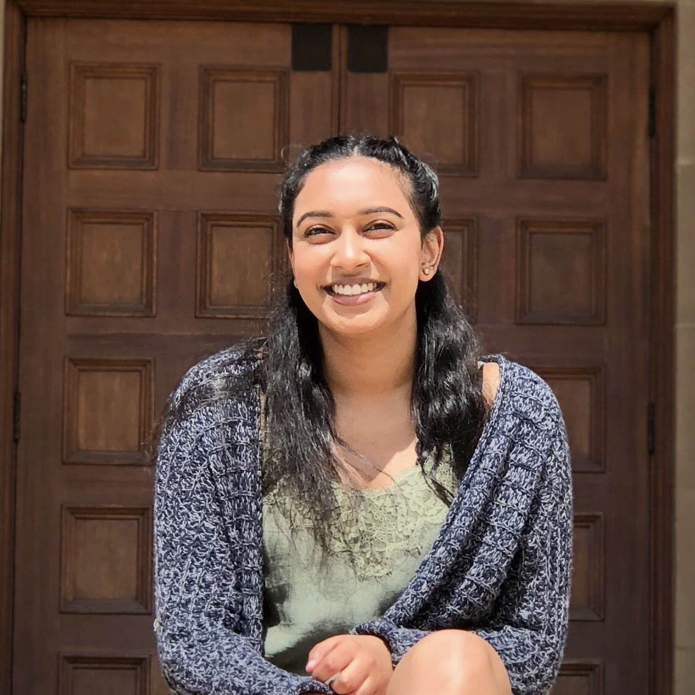

OUR MISSION
We are on a mission to provide fresher water and end the global water crisis. We want to raise money through donations and sponsors, which helps other organizations create more water purification systems and properly train members to perform the system repairs. Our goal is to empower people to live a thriving life, both emotionally and physically. |
ABOUT FRESH WAVES
Fresh Waves is a Silicon-Valley based non-profit organization founded in 2018. With the common goal of increasing the number of people worldwide who have access to purified water, the founders of Fresh Waves decided to use their programming, business, and design skills to fill a void. One hundred percent of the money received from selling Fresh Waves products will be donated to organizations such as Healing Waters International and Charity: Water. |
|
Our plan is to send volunteers and school ambassadors to various third-world countries, such as India, Africa, and Latin America, to help build the water purification systems and educate the public about the effects of consuming unsanitary water. Educating the population to use the water purification system enables them to drink cleaner water and keep a healthier lifestyle. |
THE FOUNDERS
| ANKITA JANAKIRAMAN | PRANATHI MANGA | RUJULA MURALIDHAR |
|---|---|---|

|

|

|
| Ankita is currently a senior at Fremont High School in Sunnyvale, CA. At school, Ankita is the vice president for her school’s Interact chapter, treasurer of the National Honor Society chapter, secretary of the Speech and Debate team, and she plays for the school tennis team. She is interested in pursuing a major encompassing aspects of Data Science and Neuroscience at a 4-year university. | Pranathi is currently a senior at Evergreen Valley High School in San Jose, CA. At school, Pranathi is the president of the International Desi Connection club, the president of California Scholarship Federation, the Treasurer of the International Refugee Aid club, and she plays for her school’s junior varsity softball and varsity basketball teams. She is interested in pursuing a double major in Business Administration and Computer Science at a 4-year university. | Rujula is currently a senior at Dublin High School in Dublin, CA. At school, Rujula is the co-president of the DECA chapter, president of the Habitat for Humanity chapter, vice president for the Elements of India club, and the co-captain of the Bollywood team, Dublin Afsana. She is interested in pursuing a double major in Business Economics and Computer Science at a 4-year university. |
OUR PARTNERS
OUR PARTNERSHIP
In order to better attain our mission of improving access to and quality of water worldwide, Fresh Waves has partnered with three leading organizations with common visions as us- Healing Waters International and Charity: Water.
All money raised through selling our products and public donations will be given directly to these organizations. All volunteers though our clubs will participate in missions such as building purification systems and other guided projects through these groups.